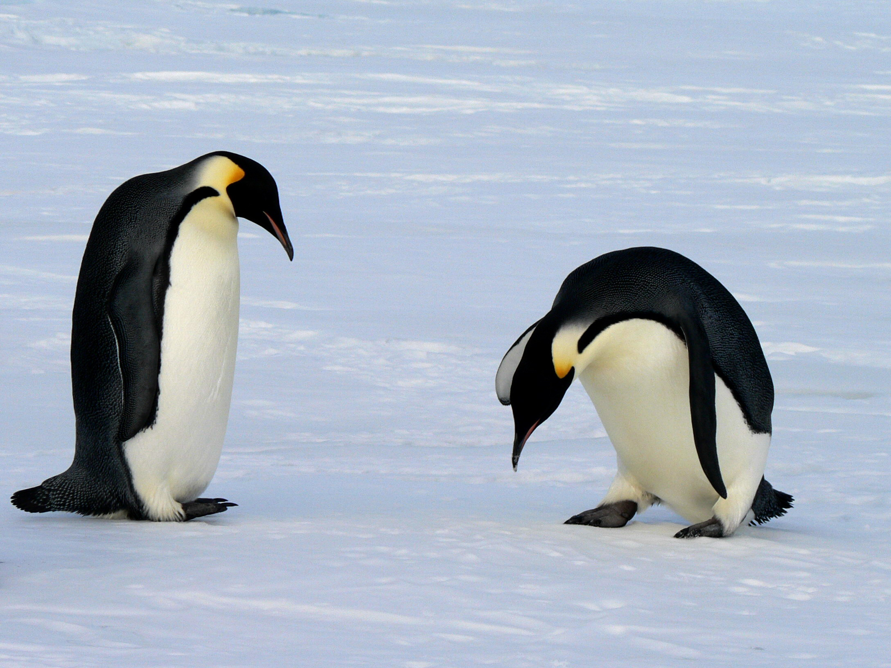

Penguins are a diverse group of flightless birds, with each type displaying its own distinct characteristics and adaptations. The Emperor Penguin, renowned for its regal appearance, is the largest of all penguin species and calls Antarctica home. These magnificent creatures endure extreme cold, with males incubating the eggs during the harsh winter months. Adélie Penguins, also found in Antarctica, possess a charming look with a white belly and a black head. They are highly adept at swimming and diving, relying on their streamlined bodies to navigate through the frigid waters.
Gentoo Penguins, recognizable by their bright orange bills and white-feathered caps, reside in the subantarctic regions. They are known for their swift swimming speeds and often build their nests from rocks. Chinstrap Penguins derive their name from the thin black band resembling a strap under their chin. They are commonly spotted on the Antarctic Peninsula and nearby islands, gathering in large colonies.
Rockhopper Penguins, found in the subantarctic regions, are known for their distinctive appearance. They possess spiky yellow feathers on their heads and exhibit remarkable agility in hopping across rocky terrain. Macaroni Penguins sport extravagant yellow crests and vibrant red eyes, making them quite the spectacle. They nest in the subantarctic and sub-Antarctic islands, often forming colonies of thousands of individuals.
On the African continent, the African Penguin, also called the Jackass Penguin due to its donkey-like braying, resides along the southern coast. These penguins have adapted to warmer climates and are well-suited to life both on land and in the water. They nest in burrows or rocky crevices and are known for their distinct black and white markings.
Each penguin species has evolved unique characteristics to thrive in their respective habitats. From the icy realms of Antarctica to the rocky coastlines of subantarctic islands and the African shores, penguins captivate us with their incredible adaptations and behaviors, making them an enchanting group of birds to study and admire.

Emperor penguins are the largest and heaviest of the penguin species, weighing in at an astounding 100 pounds and standing at almost 4 feet tall. These majestic creatures are uniquely adapted to endure the harshest conditions of Antarctica. With their streamlined bodies and tightly packed feathers, they brave the extreme cold and winds that can reach up to 200 miles per hour. Emperor penguins exhibit remarkable parenting behaviors, with males taking on the responsibility of incubating the eggs during the brutal Antarctic winter. Forming tightly packed huddles to conserve heat, they endure temperatures as low as -40 degrees Celsius while protecting their precious eggs. The males go without food for months, relying on their energy reserves to survive until the females return from the ocean with food for the newly hatched chicks. This extraordinary level of dedication and resilience is a testament to the remarkable nature of the emperor penguins, making them an iconic symbol of the Antarctic wilderness.